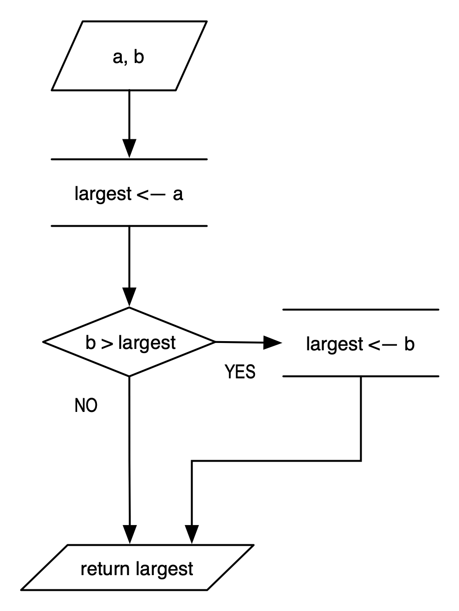

Algorithms#
Algorithms are groups of instructions that perform specific tasks, like solving problems. These groups of well defined instructions receive their name from Muhammad ibn Musa al-Khwarizmi, a Persian scholar who lived in the 8th century and developed methods for problem solving that are considered the first algorithms.
Algorithms can be simple procedures, like the following one that finds the largest of two numbers:
largestOfTwo(a,b)
largest <-- a;
if b > largest:
largest <-- b;
return largest;
In the notation above, the left arrow <--, is the assignment operator. largest<--a; means that the value of a is assigned to the variable largest. This is similar to the algebraic operator \(=\), but with the following caveat. In algebra, the expression \(x=x+y\) implies that \(y=0\). In algorithms (and in programming), the expression x=x+y (or x <-- x+y) means that we first evaluate the right part and then we assign its value to the left part.
{kind=link}

Algorithms are described visually, as flow charts shown to the right, or verbally, as shown above. The verbal description of algorithms is called pseudocode. In many ways pseudocode resembles a computer program but without the syntax rigor of programming languages. Because of that resemblance, pseudocode is usually a better way to express an algorithm than a flow chart.
Algorithms can be more complex, like the following one that finds the largest number in a sequence \(s(n)\) of \(n\) numbers, \(s_1, s_2, \ldots, s_n\):
largestInSequence ( s(n) )
largest <-- s[1];
i <-- 2;
while (i <= n) {
if s[i] > largest:
largest <-- s[i];
i <-- i+1;
}
return largest;
We devise algorithms to solve problems of various difficulty. Finding the largest of two numbers, or the largest of a sequence of numbers, are relatively easy problems to solve. As the problem difficulty increases, our task is not just find any algorithm to solve it but the most efficient algorithm to do so. Consider, for example, the following algorithm that solves the quadratic equation.
solveQuadratic ( a,b,c )
if b*b-4*a*c<0 {
return "No real solutions";
} else {
x1 <-- (-b-SQRT(b*b-4*a*c))/(2*a);
x2 <-- (-b+SQRT(b*b-4*a*c))/(2*a);
return x1, x2;
}
The algorithm does solve the problem, but it performs repetitive tasks. For example, the quantity \(b^2-4ac\) is evaluated three times. The square root \(\sqrt{b^2-4ac}\) is evaluated twice. These repetitions can be avoided as follows.
solveQuadratic ( a,b,c )
delta = b*b-4*a*c;
if delta<0 {
return "No real solutions";
} else {
sqrtDelta <-- SQRT(b*b-4*a*c);
x1 <-- (-b-sqrtDelta)/(2*a);
x2 <-- (-b+sqrtDelta)/(2*a);
return x1, x2;
}
Further optimization is possible:
solveQuadratic ( a,b,c )
delta = b*b-4*a*c;
if delta<0 {
return "No real solutions";
} else {
e <-- -b/(2*a);
g <-- SQRT(d)/(2*a);
x1 <-- e-g;
x2 <-- e+g;
return x1, x2;
}
One final optimization can be achieved by removing the duplicate operation involving \(2a\):
solveQuadratic ( a,b,c )
delta = b*b-4*a*c;
if delta<0 {
return "No real solutions";
} else {
f <-- 2*a;
e <-- -b/f;
g <-- SQRT(d)/f;
x1 <-- e-g;
x2 <-- e+g;
return x1, x2;
}
Algorithms are characterized by their complexity, but also by their correctness, and their ability to terminate. The complexity tells us what resources the algorithm requires, e.g., how much time (or memory, or both) will it take to complete its tasks. The correctness assures us that the algorithm solves every variance of the problem it was designed for. And the ability to terminate (the finiteness) is a guarantee that the algorithm will not run for ever.
Consider the following example of an algorithm that approximates the square root of a number.
squareRoot ( n, epsilon )
if ( n>=0 ) {
x <-- 1;
while ( diff > epsilon ) {
nextx <-- ( x + n/x ) / 2;
diff <-- absolute_value_of (x-nextx);
x <-- nextx;
} // while
return x;
} // if
The parameter epsilon is a measure of convergence. As successive values of nextx are computed, we measure how close they are to each other. If they are sufficiently close, we consider the approximation good enough and we terminate the algorithm. Usually for values of epsilon around \(0.00001\), the algorithm above yields very accurate results. For example, the following table shows the progression as we try to compute \(\sqrt{10}\):
Term (\(n=10\)) |
Value |
|
\(x_0\) |
1 |
\(|x_{k+1}-x_k|\) |
\(x_1=(x_0+n/x_0)/2\) |
5.5 |
4.5 |
\(x_2=(x_1+n/x_1)/2`\) |
3.659090909 |
1.840909091 |
\(x_3=(x_2+n/x_2)/2`\) |
3.196005082 |
0.4630858272 |
\(x_4=(x_3+n/x_3)/2`\) |
3.162455623 |
0.03354945907 |
\(x_5=(x_4+n/x_4)/2`\) |
3.162277665 |
0.0001779576282 |
\(x_6=(x_5+n/x_5)/2`\) |
3.16227766 |
0.000000005007295911 |
\(x_7=(x_6+n/x_6)/2`\) |
3.16227766 |
0 |
After only six iterations, the algorithm converges within less that one thousandth.
The difference between \(x-5\) and \(x_4\) is less than \(0.001\).
After two more iterations, the algorithm converges within 0, i.e., finds the actual value of \(\sqrt{10}\).
In fact, the algorithm works nicely for large numbers too.
For example, it takes 70 iterations to compute the following root with a convergence (epsilon) value of \(10^{-10}\)
In some cases, when we are not sure that our algorithm will terminate after a finite number of steps, we introduce an artificial mechanism to stop it. For example, after a few experiments with the square root algorithm above, we may come to the conclusion that the algorithm stops after 500 iterations, i.e., it terminates successfully. So, if the algorithm takes more than 1000 iterations, it either works on a difficult number that we have not thought of, or there is an error that creates an infinite loop and the algorithm will not stop. To prevent such infinite loop, we modify the square root algorithm as follows: we introduce an iteration counter, and when that counter exceeds a large value, we force the algorithm to end.
squareRoot ( n, epsilon )
if ( n>=0 ) {
RUNAWAY <-- 5000;
counter <-- 1;
x <-- 1;
while ( diff > epsilon AND counter < RUNAWAY ) {
nextx <-- ( x + n/x ) / 2;
diff <-- absolute_value_of (x-nextx);
x <-- nextx;
counter <-- counter+1;
} // while
return x;
} // if
The algorithm above will terminate after 5000 iterations. But now we cannot guarantee its correctness. Because if we are computing a square root that might have required 5050 iterations, we stop the algorithm 50 iterations short of the answer. There is no way to tell if the value of \(x\) that the algorithm returns has met the converge criterion or it’s because we reached the iteration limit (set by RUNAWAY).
It is left as an exercise, to modify the algorithm above in such as way to inform us how it terminated: either successfully by meeting the convergence criterion (diff<=epsilon) or abruptly because it exceeded the allowed number of iterations (counter>=RUNAWAY).